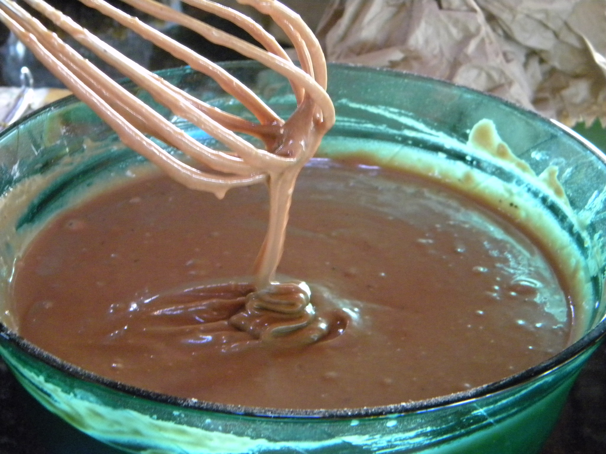

Massa
Recheio
Cobertura
Para a massa: Bata todos os ingredientes na batedeira, coloque em uma forma levemente untada e leve para assar a 180 °C por 1 hora.
Para o recheio: Junte todos os ingredientes na panela, mexa bem até ferver e engrossar, coloque em recipiente e reserve para esfriar.
Para a cobertura: Coloque todos os ingredientes na panela, misture bem até engrossar, transfira para uma jarra e reserve.
Para a calda: Misture todos os ingredientes e reserve.
Para a montagem: Retire o bolo da assadeira após assado e frio, corte-o na horizontal, regue o bolo com a calda de leite de coco, leite e açúcar. Faça camadas do recheio, coloque a última camada de bolo, regue com a cobertura, decore com um pouco de coco fresco e sirva.
Massa
Recheio
Cobertura
Chantininho
Em uma batedeira, coloque as claras, o açúcar, o vinagre e bata até dar o ponto de pico. Adicione as gemas peneiradas e misture com um fouet. Acrescente a farinha e misture novamente. Junte o óleo, o leite, a baunilha e misture delicadamente. Transfira para uma forma untada e leve para assar em forno preaquecido a 200 °C por meia hora. Passe esse creme pelas laterais e topo do bolo. Finalize com lascas do chocolate branco, morangos e leite ninho polvilhado.
Em uma panela, coloque o leite condensado, o creme de leite e cozinhe até ficar cremoso. Despeje em um prato, espalhe bem, cubra com plástico filme e leve para a geladeira por uma hora. Assim que esfriar, coloque na batedeira e adicione o chocolate derretido e bata bem. Acrescente a manteiga em temperatura ambiente e bata novamente. Junte o leite de coco, bata e vá acrescentando o leite ninho aos poucos. Bata até ficar tudo homogêneo e cremoso.
Em uma vasilha, coloque o leite, o leite de coco, o açúcar, o leite ninho e misture bem.
Desenforme o bolo e corte em três pedaços. Forre o fundo da forma com plástico e coloque uma das rodelas do bolo. Molhe essa rodela com a calda, adicione um pouco do recheio, morangos picados e cubra com a outra rodela do bolo. Repita o processo até chegar no topo. Cubra o bolo com o plástico e leve para a geladeira
Em uma batedeira, coloque o chantilly gelado, o leite ninho, o leite condensado e bata até dar o ponto desejado
Passe esse creme pelas laterais e topo do bolo. Finalize com lascas do chocolate branco, morangos e leite ninho polvilhado.
Volte a pagina inicial